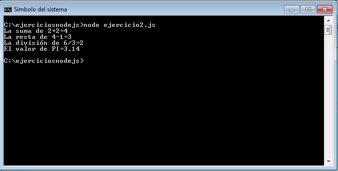
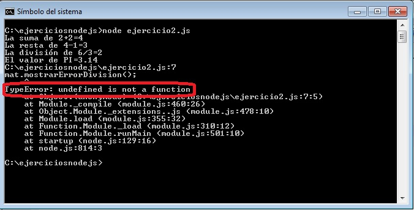

La primera gran diferencia en el JavaScript que se utiliza en Node.js es el concepto de módulo. Sabemos que cuando nuestra aplicación comienza a crecer un único archivo es imposible de manejar todas las funcionalidades, lo mismo ocurre con librerías desarrolladas por otros programadores.
Un módulo contiene funciones, objetos, variables donde indicamos cuales serán exportados para ser utilizados por otros programas.
Vamos a crear un programa muy sencillo que nos permita sumar, restar y dividir números y mostrarlos por la consola. Las funcionalidades las dispondremos en un módulo de archivo y veremos como la consumimos en nuestro programa principal.
Primero creemos nuestro módulo llamado matematica.js con el siguiente código:
matematica.js
var PI=3.14;
function sumar(x1,x2)
{
return x1+x2;
}
function restar(x1,x2)
{
return x1-x2;
}
function dividir(x1,x2)
{
if (x2==0)
{
mostrarErrorDivision();
}
else
{
return x1/x2;
}
}
function mostrarErrorDivision() {
console.log('No se puede dividir por cero');
}
exports.sumar=sumar;
exports.restar=restar;
exports.dividir=dividir;
exports.PI=PI;
En este archivo podemos definir variables, funciones, objetos etc. y los que necesitamos que sean accedidos desde otro archivo los exportamos agregándolos al objeto exports:
exports.sumar=sumar; exports.restar=restar; exports.dividir=dividir; exports.PI=PI;
Aquello que no necesitemos llamarlo desde otra archivo como en este ejemplo pasa con la función mostrarErrorDivision simplemente no la agregamos al objeto exports.
Codifiquemos ahora nuestra aplicación principal que la llamaremos ejercicio2.js y también la guardamos en la misma carpeta donde tenemos el archivo matematica.js:
var mat=require('./matematica');
console.log('La suma de 2+2='+mat.sumar(2,2));
console.log('La resta de 4-1='+mat.restar(4,1));
console.log('La división de 6/3='+mat.dividir(6,3));
console.log('El valor de PI='+mat.PI);
El JavaScript que se ejecuta en un navegador web actualmente no puede hacer referencia a otro archivo, en Node.js esto se hace llamando a la función require e indicando el path donde se encuentra en este caso el archivo matematica.js (no es necesario indicar la extensión):
var mat=require('./matematica');
Luego la variable mat tiene acceso a todas las variables, funciones y objetos exportados.
Llamamos luego a las funciones y accedemos a las variables mediante la variable mat:
console.log('La suma de 2+2='+mat.sumar(2,2));
console.log('La resta de 4-1='+mat.restar(4,1));
console.log('La división de 6/3='+mat.dividir(6,3));
console.log('El valor de PI='+mat.PI);
En nuestra consola al ejecutar nuestro programa ejercicio2.js tenemos como resultado:

Tengamos en cuenta que solo podemos acceder del módulo a aquellos elementos exportados, si por ejemplo tratamos de acceder a la función mostrarErrorDivision del módulo matematica.js:
mat.mostrarErrorDivision();
Tendremos como resultado un error en tiempo de ejecución ("undefined is not a function"):

Esta pequeña introducción de módulos es para entender en los próximos temas cada vez que consumamos módulos que ya vienen con Node.js y de otras librerias que descarguemos de internet.
Veremos más adelante que los módulos pueden ser una carpeta que contiene un conjunto de archivos y de subcarpetas (esto es muy útil si la funcionalidad del módulo es muy compleja y por lo tanto no debería estar en un único archivo)
No nos preocuparemos por ahora de crear módulos propios más complejos ya que la forma de consumir módulos con la función require es idéntica ya sea que el módulo sea un único archivo o una carpeta.